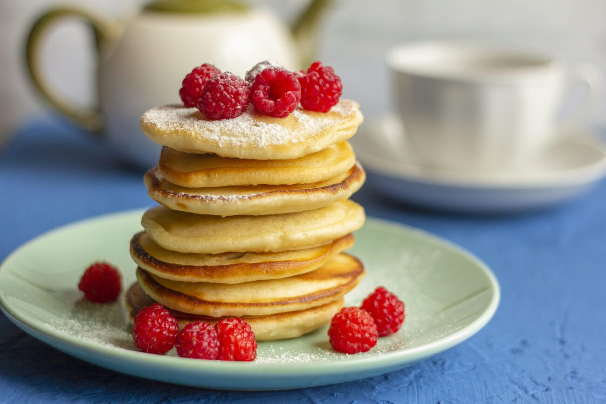

Меняющийся цвет
В миску разбиваем яйцо, немного взбиваем венчиком. Добавляем 1 стакан тёплого кефира и 0,5 чайной ложки пищевой соды. Сода прекрасно гасится кефиром, и масса становится пышной и увеличивается в объеме. Полученную массу немного подсаливаем, буквально одну щепотку.
С помощью сита просеиваем муку. Тесто должно быть не слишком жидкое, но и не густое. В граммах - 220-250 г (примерно 1,5 стакана). На разогретую сковороду с растительным маслом выкладываем тесто столовой ложкой. Масла, кстати, нужно довольно много.
Жарим оладьи на среднем огне до образования аппетитной корочки с двух сторон. Это примерно по 2-3 минуты на каждую сторону. Готовые оладушки на кефире выкладываем на бумажное полотенце. Делаем это для того, чтобы впиталось лишнее масло после жарки. Как только оладьи немного остынут, можно приступать к чаепитию!

